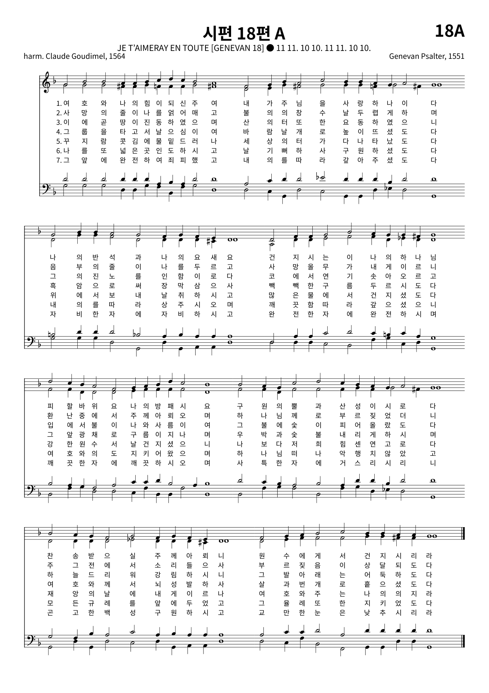

Psalm 18A
JE T’AIMERAY EN TOUTE [GENEVAN 18] · 11 11. 10 10. 11 11. 10 10.
English title: Thee, LORD, I Love; Thou Art My Shield
Tune: Genevan Psalter, 1551 · Harmony: Claude Goudimel, 1564 · Lyrics: Korean adaptation of Psalm 18 from the Korean Revised Version (AI draft adaptation · not yet theologically reviewed) · 7 stanzas
Psalm 18 is divided into 2 tunes: A B · This tune contains stanzas 1–7 of the Psalm 18 lyrics.
Score PDF MusicXML (for printing) MusicXML (for accompaniment, with prelude and repeats) Read Psalm 18 (Korean Revised Version)
Score
← Psalm 17 ListAccompaniment (in preparation)Psalm 18B →
Lyrics (Korean)
Stanza 1
여호와 나의 힘이 되신 주여
내가 주님을 사랑하나이다
나의 반석과 나의 요새요
건지시는 이 나의 하나님
피할 바위요 나의 방패시요
구원의 뿔과 산성이시로다
찬송 받으실 주께 아뢰니
원수에게서 건지시리라
여호와 나의 힘이 되신 주여
내가 주님을 사랑하나이다
나의 반석과 나의 요새요
건지시는 이 나의 하나님
피할 바위요 나의 방패시요
구원의 뿔과 산성이시로다
찬송 받으실 주께 아뢰니
원수에게서 건지시리라
Stanza 2
사망의 줄이 나를 얽어매고
불의의 창수 날 두렵게 하며
음부의 줄이 나를 두르고
사망 올무가 내게 이르니
환난 중에서 주께 아뢰오며
하나님께로 부르짖었더니
주 그 전에서 소리 들으사
부르짖음이 상달되도다
사망의 줄이 나를 얽어매고
불의의 창수 날 두렵게 하며
음부의 줄이 나를 두르고
사망 올무가 내게 이르니
환난 중에서 주께 아뢰오며
하나님께로 부르짖었더니
주 그 전에서 소리 들으사
부르짖음이 상달되도다
Stanza 3
이에 곧 땅이 진동하였으며
산의 터 또한 요동하였으니
그의 진노를 인함이로다
코에서 연기 솟아오르고
입에서 불이 나와 사름이여
그 불에 숯이 피어올랐도다
하늘 드리워 강림하시니
그 발 아래는 어둑하도다
이에 곧 땅이 진동하였으며
산의 터 또한 요동하였으니
그의 진노를 인함이로다
코에서 연기 솟아오르고
입에서 불이 나와 사름이여
그 불에 숯이 피어올랐도다
하늘 드리워 강림하시니
그 발 아래는 어둑하도다
Stanza 4
그룹을 타고서 날으심이여
바람 날개로 높이 뜨셨도다
흑암으로써 장막 삼으사
빽빽한 구름 두르시도다
그 앞 광채로 구름이 지나며
우박과 숯불 내리게 하시며
여호와께서 뇌성 발하사
살과 번개로 흩으셨도다
그룹을 타고서 날으심이여
바람 날개로 높이 뜨셨도다
흑암으로써 장막 삼으사
빽빽한 구름 두르시도다
그 앞 광채로 구름이 지나며
우박과 숯불 내리게 하시며
여호와께서 뇌성 발하사
살과 번개로 흩으셨도다
Stanza 5
꾸지람 콧김에 물밑 드러나
세상의 터가 다 나타났도다
위에서 보내 날 취하시고
많은 물에서 건지셨도다
강한 원수서 날 건지셨으니
나보다 저희 힘센 연고로다
재앙의 날에 내게 이르나
여호와 주는 나의 의지라
꾸지람 콧김에 물밑 드러나
세상의 터가 다 나타났도다
위에서 보내 날 취하시고
많은 물에서 건지셨도다
강한 원수서 날 건지셨으니
나보다 저희 힘센 연고로다
재앙의 날에 내게 이르나
여호와 주는 나의 의지라
Stanza 6
나를 또 넓은 곳 인도하시고
날 기뻐하사 구원하셨도다
내 의를 따라 상 주시오며
깨끗함 따라 갚으셨으니
여호와의 도 지키어 왔으며
하나님 떠나 악 행치 않았고
모든 규례를 앞에 두었고
그 율례 또한 지키었도다
나를 또 넓은 곳 인도하시고
날 기뻐하사 구원하셨도다
내 의를 따라 상 주시오며
깨끗함 따라 갚으셨으니
여호와의 도 지키어 왔으며
하나님 떠나 악 행치 않았고
모든 규례를 앞에 두었고
그 율례 또한 지키었도다
Stanza 7
그 앞에 완전하여 죄 피했고
내 의를 따라 갚아 주셨도다
자비한 자에 자비하시고
완전한 자에 완전하시며
깨끗한 자에 깨끗하시오며
사특한 자에 거스리시리니
곤고한 백성 구원하시고
교만한 눈은 낮추시리라
그 앞에 완전하여 죄 피했고
내 의를 따라 갚아 주셨도다
자비한 자에 자비하시고
완전한 자에 완전하시며
깨끗한 자에 깨끗하시오며
사특한 자에 거스리시리니
곤고한 백성 구원하시고
교만한 눈은 낮추시리라